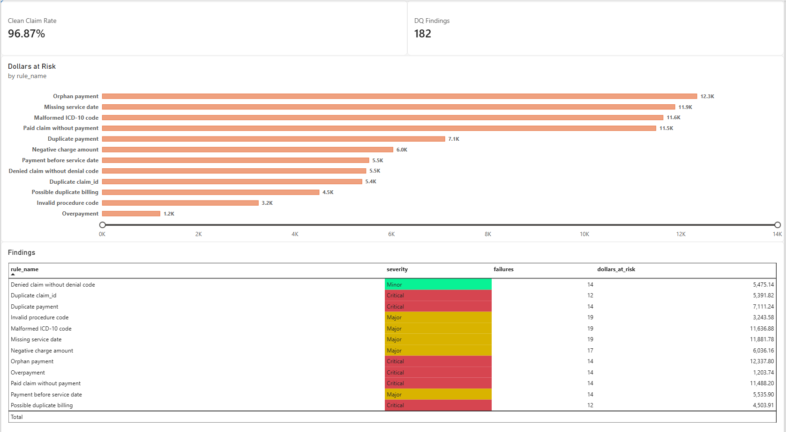
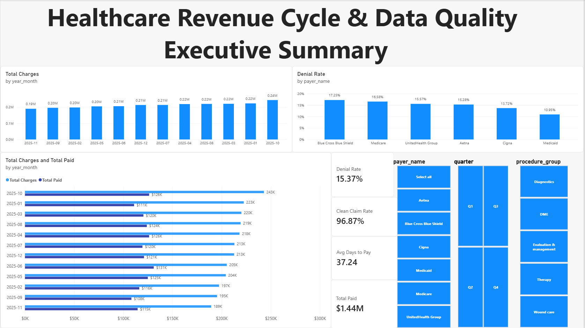

Building a Data Quality Control Engine for Healthcare Revenue Cycle Data
Twelve documented validation rules, run identically in Python, SQLite and Azure SQL, feeding a four-page Power BI report. Built to be tested, not just demonstrated.
Read this first. All data is synthetic. Procedure codes and prices are invented, and I have not worked with US healthcare billing. This is a portfolio project that applies operations reconciliation thinking to a new domain. It is not client work and not healthcare experience.
§01The problem
In revenue cycle operations, money moves through claims, payments, denials and adjustments, and each record can be wrong in a different way: a claim billed twice, a payment with no claim, a “Paid” claim with no cash behind it. Each error is small. Together they separate reported revenue from real revenue.
The usual answer is people reconciling spreadsheets by hand. I wanted to see how much of that can become a repeatable, testable system, and how to prove it works instead of claiming it does. I used a real job description (Senior Data Operations & Analyst: Power BI, SQL, Python validation, Excel, Azure) as the specification. I did not apply for it. It gave me a realistic target.
§02Where I’m coming from
I have 15+ years in telecom and logistics operations, where I learned to trust numbers only after they reconcile. In telecom supply chain operations I led a multi-region, multi-warehouse inventory reconciliation on one of Ericsson’s largest managed services contracts in the Middle East. At Blue Light I built reconciliation for the order lifecycle, matching shipped and received transactions against cash receipts to track outstanding customer receivables. Before AI tools, that work lived in Excel and Access. This project asks whether the same mindset transfers to a domain I haven’t worked in.
§03Approach
- Start with an answer key. The generator logs every injected error in a ground-truth manifest, so the validator can be scored with precision and recall instead of eyeballed.
- Separate “untidy” from “wrong.” A date written
03/15/2025is a formatting issue: clean it and log it. A payment dated before the service is an integrity issue: flag it. A cleaning layer handles the first kind and never counts it as a failure. - Make it fail first. A hard test set adds near-duplicate billing, claims with two problems at once, 1,366 formatting problems, and legitimate look-alikes that must not be flagged.
- Fix it, with tests. Each fix has a unit test, including the look-alikes, so a later change cannot quietly start flagging legitimate claims.
- Rebuild it where employers work. The same rules run as SQL views in SQLite and as T-SQL in Azure SQL, and every result is compared against the Python engine.
- Show it. A star schema feeds a Power BI report with a data quality scorecard and row-level security by payer.
§04Results
| Test set | Anomalies | Precision | Recall |
|---|---|---|---|
| Easy set | 150 | 100% | 100% |
| Hard set, first validator | 182 | 14.8% | 88.5% |
| Hard set, after fixes | 182 | 100% | 100% |
The first validator raised 925 false alarms on the hard set. For example, 314 valid claims were called “missing service date” because their dates were in US format, and 144 good payments were called orphans because of stray spaces or lowercase in the claim ID. It also missed 21 real errors, including overpayments hidden behind a $1,234.50 charge. After a cleaning layer and a twelfth rule for near-duplicate billing, it found all 182 injected anomalies with no false alarms.
- $85,846 of simulated revenue exposure across 182 findings, led by orphan payments.
- 12 of 12 rules flag the same records and the same dollar totals in Python, SQLite and Azure SQL.
- 34 automated tests. The Azure SQL warehouse builds in about a minute on the free tier.


§05Decisions worth explaining
- Flagged rows stay in the data. They carry a
dq_flagso the report can show clean numbers or all numbers. Deleting bad rows would hide the problem. - Import mode in Power BI. DirectQuery would wake the free-tier database on every click and burn its monthly compute allowance.
- Severity drives tolerance. A small failure rate on a financial rule is a breach. The same rate on a cosmetic rule is not.
- Dollars, not just counts. “182 errors” is abstract. “$85,846 of exposure” is something a manager acts on.
§06What I would not claim
The 100% scores come from my own generator. They prove the pipeline is wired correctly, not that it would survive real data, which will contain problems I did not imagine. The procedure-code check uses a 14-code reference table and the diagnosis check tests format only. The near-duplicate rule is a heuristic that would feed a human review queue in production. Row-level security is static, the report is not published online, and I did not use Microsoft Fabric.
§07What’s next
- Test against public, real-structure claims data and report how the validator behaves.
- Add an agent layer that reads the findings, proposes likely root causes, and drafts the reconciliation summary for a human to approve, connecting this work to my AI agent engineering direction.
- Add dynamic row-level security and a scheduled pipeline that tracks data quality over time.